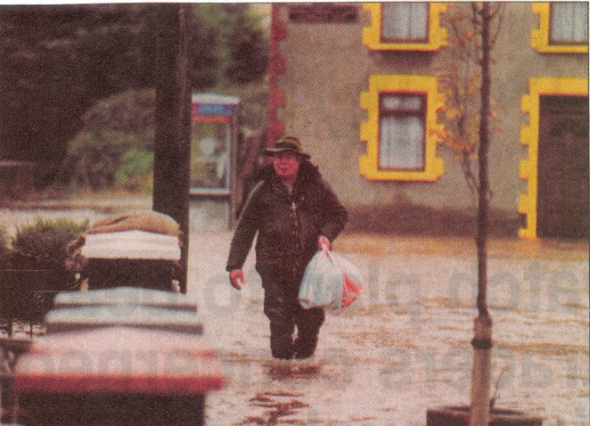

RECOMMENDATIONS
The following recommendations are made:
Many engineering options were proposed which included removal of existing structures, widening of river channels and raising of defence walls etc. Some of these methods are not potentially viable due to the increased costs incurred and due to the historical and heritage values of certain engineering modifications suggested.
i.e. The replacement of the Old Bridge.
The options considered following consultation with the local authority were as follows:

A Good Samaritan brings some food supplies to marooned residents of the Old Bridge.
<
Previous> <Index> <Next>